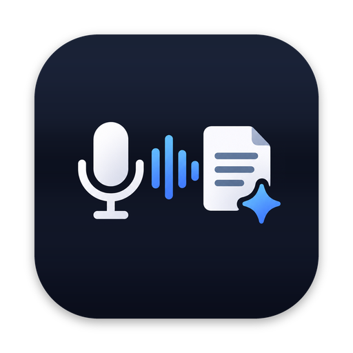

Gespräche und Online-Meetings aufnehmen, mitlesen und zusammenfassen. Alles bleibt auf deinem Gerät.
Signiert und von Apple notarisiert. Updates installiert die Mac-App selbst.
Live-Transkript mit Apple Speech, Whisper oder Parakeet. Wichtige Stellen markierst du mit einem Tipp.
Auf dem Mac nimmt NotifyAI Mikrofon und Systemton von Zoom, Teams oder Discord auf und trennt „Ich“ von den anderen.
Kernpunkte, Aufgaben, Entscheidungen und offene Fragen mit Apple Intelligence. Jeder Punkt springt zur Stelle im Transkript.
Jedes Wort wird einer Stimme zugeordnet. Benenne Personen einmal, NotifyAI erkennt sie in späteren Aufnahmen wieder.
„Was hat Anna letzte Woche zum Budget gesagt?“ Die Antwort nennt ihre Quellen.
Markdown, PDF, Word und Untertitel, dazu Obsidian, Notion und Webhooks für Zapier, Make oder n8n.
Aufnahmen, Transkripte und Zusammenfassungen entstehen und bleiben auf deinem Gerät. Es gibt kein Konto, keine Cloud, kein Tracking. Ins Internet geht NotifyAI nur, wenn du ein Sprachmodell lädst, nach Updates suchst oder selbst eine Integration einrichtest. Datenschutzerklärung
Macs mit macOS 26 sowie iPhone und iPad mit iOS bzw. iPadOS 26. Für Zusammenfassungen mit Apple Intelligence braucht dein Gerät Apple Intelligence. Ohne sie erstellt NotifyAI eine einfachere, gekennzeichnete Zusammenfassung.
DMG laden, öffnen und NotifyAI in den Ordner „Programme“ ziehen. Neue Versionen findet die App selbst (Einstellungen → Updates).
Ohne diese Freigaben kann NotifyAI nichts aufnehmen. Die Aufnahmen bleiben auf deinem Mac. Ändern kannst du das unter Systemeinstellungen → Datenschutz & Sicherheit.
Schreib eine E-Mail an BITTE-AUSFUELLEN@example.com oder öffne ein Issue auf GitHub. Am schnellsten hilft der Diagnosebericht aus der App (Einstellungen → Allgemein). Er enthält keine Inhalte deiner Notizen.